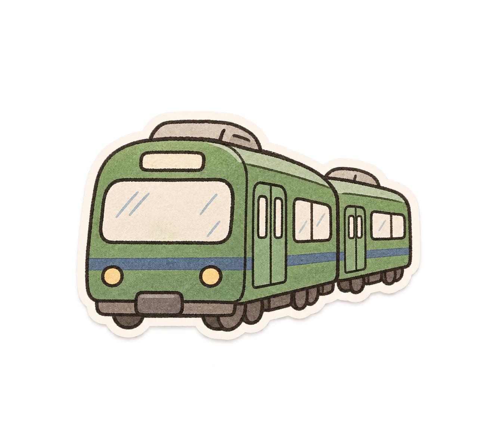
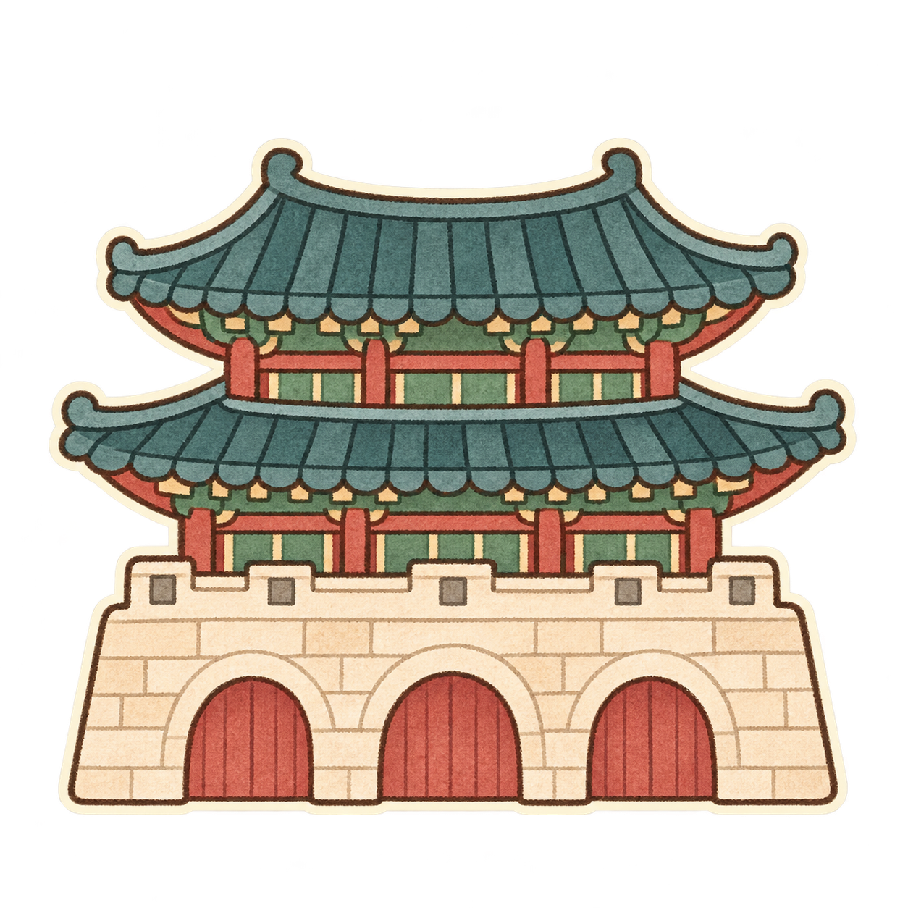
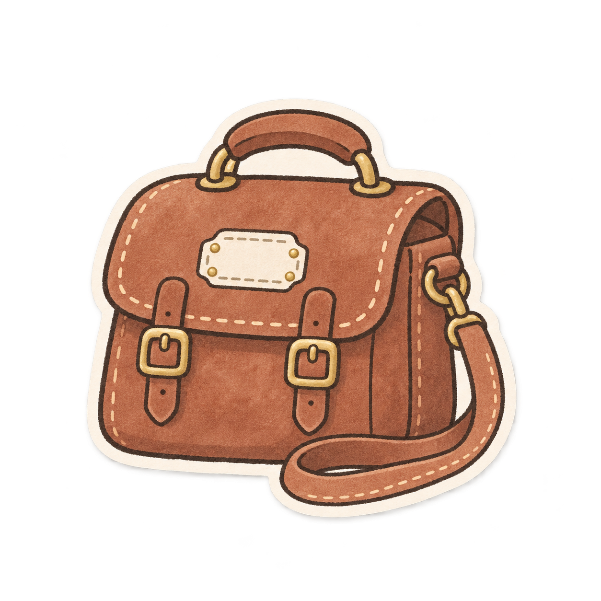
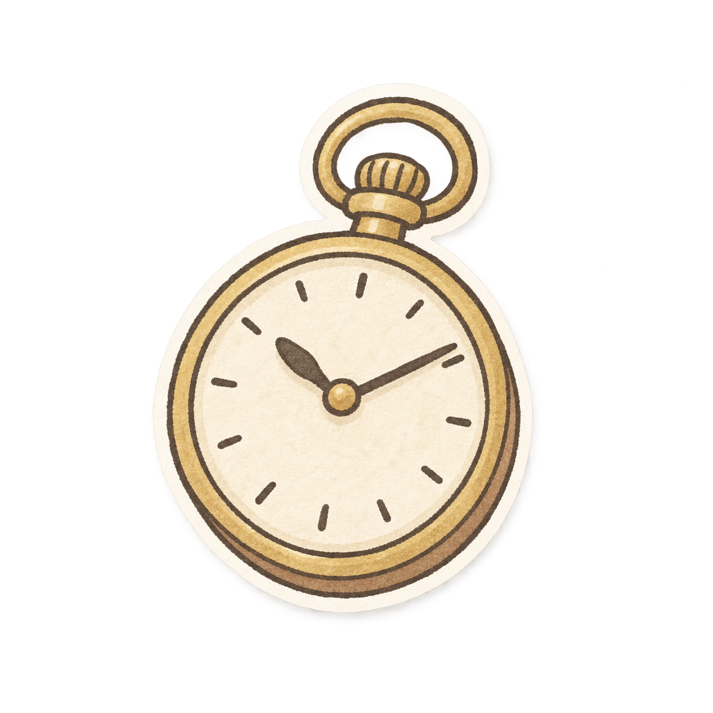

<!doctype html>
<html lang="ko"><meta charset="utf-8"><meta name="viewport" content="width=device-width,initial-scale=1">
<title>서울 여행 스티커 · Journey Focus</title>
<link rel="icon" href="data:,">
<style>
*{box-sizing:border-box}body{margin:0;background:#f4eedf;color:#294137;font-family:system-ui,sans-serif}main{max-width:1240px;margin:auto;padding:38px 32px}
header{display:flex;align-items:end;justify-content:space-between;gap:20px;margin-bottom:24px}small{letter-spacing:3px;color:#78856b;font-size:11px}h1{font-family:Georgia,serif;font-size:34px;font-weight:500;margin:8px 0}p{font-size:13px;color:#6b796a;margin:8px 0}button{border:1px solid #aeb8a3;border-radius:30px;background:#faf7ed;color:#294137;padding:11px 18px;cursor:pointer;font:inherit;font-size:12px}
.grid{display:grid;grid-template-columns:repeat(4,minmax(0,1fr));gap:16px}article{background:#fffaf0;border:1px solid #d6d2bd;border-radius:18px;padding:14px;text-align:center}figure{margin:0;height:200px;display:grid;place-items:center;border-radius:10px;background-image:linear-gradient(45deg,#b5bba20c 25%,transparent 25%,transparent 75%,#b5bba20c 75%),linear-gradient(45deg,#b5bba20c 25%,transparent 25%,transparent 75%,#b5bba20c 75%);background-position:0 0,10px 10px;background-size:20px 20px}figure img{width:100%;height:200px;object-fit:contain}h2{font-size:15px;font-weight:500;margin:10px 0 4px}.meta{display:flex;justify-content:space-between;align-items:center;padding:0 9px}a{font-size:11px;color:#506951;text-underline-offset:3px}.mini{width:48px;height:48px;object-fit:contain}footer{margin-top:24px;border-top:1px solid #c4c8b6;padding-top:16px;font-size:11px;color:#79816c}
body.dark{background:#21342f;color:#f5efdf}.dark article{background:#31453e;border-color:#526158}.dark p,.dark footer,.dark small{color:#c1c9b3}.dark a{color:#e3e7ce}
@media(max-width:750px){main{padding:25px 16px}.grid{grid-template-columns:repeat(2,minmax(0,1fr))}header{display:block}button{margin-top:12px}figure,figure img{height:160px}h1{font-size:28px}}
</style>
<main><header><div><small>JOURNEY FOCUS · SEOUL EDITION</small><h1>서울 여행 스티커</h1><p>하나씩 꺼내 쓰는 손그림 8종 · 투명 배경 PNG</p></div><button id="theme" aria-pressed="false">어두운 배경으로 보기</button></header>
<section class="grid" aria-label="스티커 8종"><article><figure></figure><h2>01 · 초록 전철</h2><div class="meta"><a href="green-metro.png" download="green-metro.png">PNG 내려받기 ↗</a></div></article>
<article><figure></figure><h2>02 · 파란 버스</h2><div class="meta"><a href="blue-bus.png" download="blue-bus.png">PNG 내려받기 ↗</a></div></article>
<article><figure></figure><h2>03 · 남산타워</h2><div class="meta"><a href="namsan-tower.png" download="namsan-tower.png">PNG 내려받기 ↗</a></div></article>
<article><figure></figure><h2>04 · 궁궐</h2><div class="meta"><a href="palace-gate.png" download="palace-gate.png">PNG 내려받기 ↗</a></div></article>
<article><figure></figure><h2>05 · 한강 다리</h2><div class="meta"><a href="hangang-bridge.png" download="hangang-bridge.png">PNG 내려받기 ↗</a></div></article>
<article><figure></figure><h2>06 · 여행가방</h2><div class="meta"><a href="travel-bag.png" download="travel-bag.png">PNG 내려받기 ↗</a></div></article>
<article><figure></figure><h2>07 · 회중시계</h2><div class="meta"><a href="pocket-watch.png" download="pocket-watch.png">PNG 내려받기 ↗</a></div></article>
<article><figure></figure><h2>08 · 하트와 반짝이</h2><div class="meta"><a href="hearts-sparkles.png" download="hearts-sparkles.png">PNG 내려받기 ↗</a></div></article></section>
<footer>서울의 분위기를 담은 장식용 그림입니다. 작은 이미지는 48px 표시 예시입니다.</footer></main>
<script>document.querySelector('#theme').onclick=function(){const dark=document.body.classList.toggle('dark');this.setAttribute('aria-pressed',String(dark));this.textContent=dark?'종이 배경으로 보기':'어두운 배경으로 보기';};</script></html>
